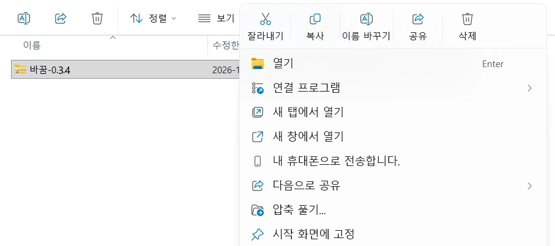
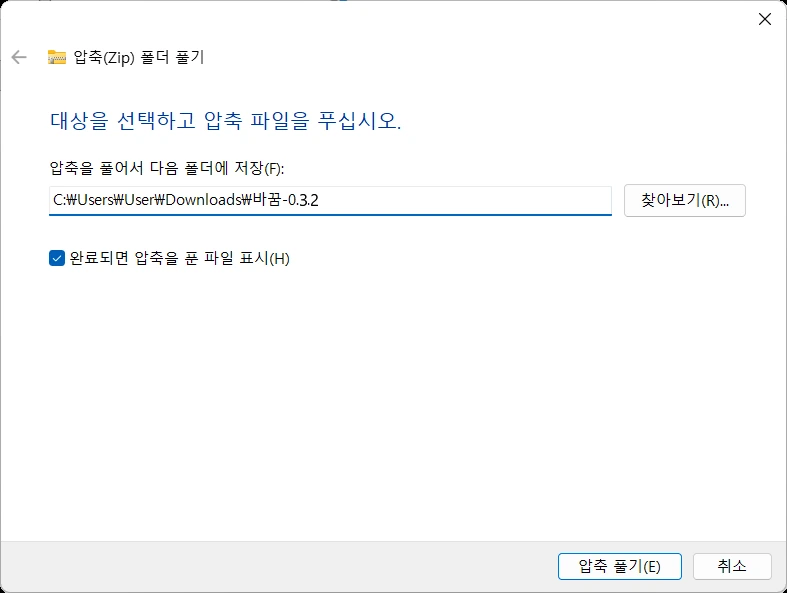
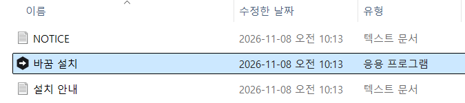
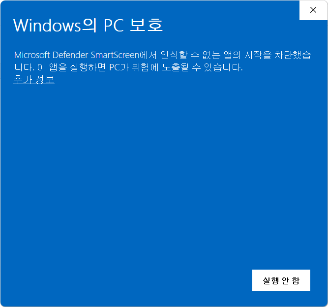
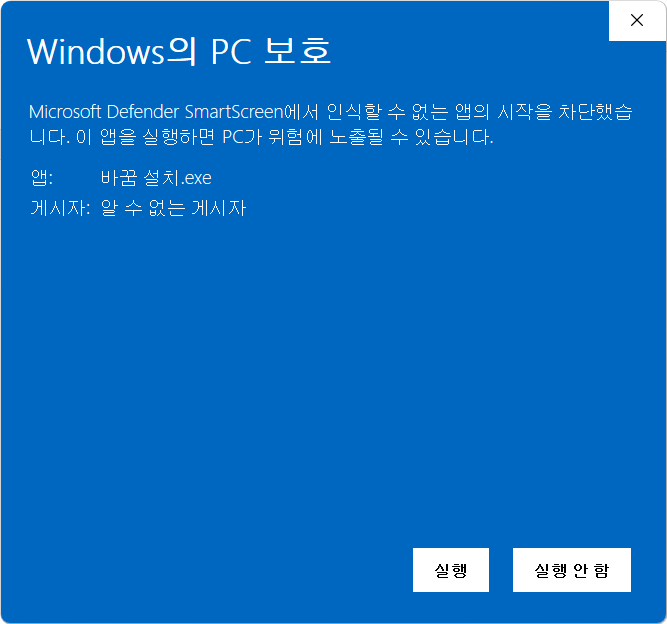
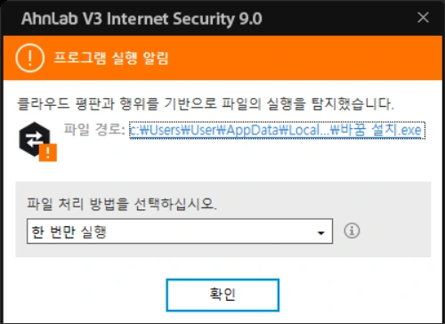
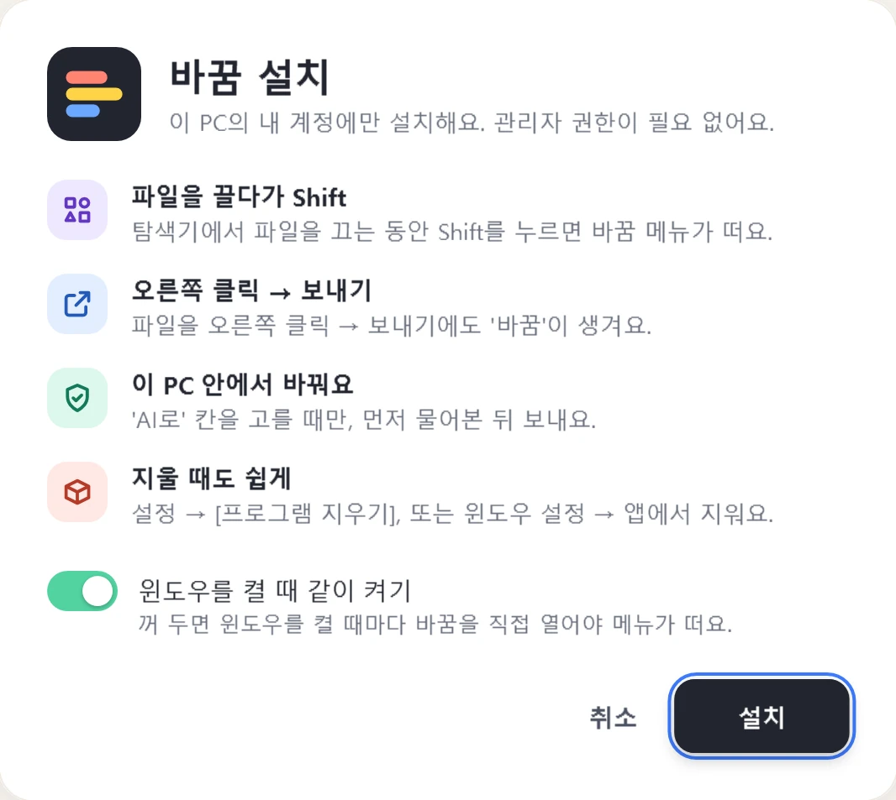

수업을 준비할 때
- 수업 자료
- 학습지 · 디자인 입힌 PPT · 수준별 자료(기초·보통·심화) · 지도안 · 채점 기준표
- 문제 만들기
- 객관식 · OX · 서술형 · 섞어서, 정답까지. 시험지를 놓으면 비슷한 새 문제로.
- 번역
- 영어 · 중국어 · 일본어 · 베트남어 · 러시아어 · 태국어 · 몽골어 · 우즈베크어로, 외국어 문서는 한국어로
선생님을 위한 윈도우 파일 변환 · AI 도구
한글·PDF·사진·영상을 탐색기에서 바로 바꿔요. 쓰던 AI에 로그인해 두면 요약·번역·학습지까지 파일을 놓아서 만들어요. 원본은 그대로 둬요.
시작한글 파일을 끌어 왔어요. 파일에 맞는 칸만 떠요. 아무 데나 누르면 다음 칸에 놓아요.
쓰는 법
탐색기에서 하던 대로 파일을 끌기만 하면 돼요. 따로 창을 열거나 파일을 올릴 필요가 없어요.
탐색기에서 파일을 잡고 끌어요. 여러 개를 한꺼번에 끌어도 돼요.
커서 옆에 메뉴가 떠요. 마우스로 칸을 고르거나 숫자 키 1~9를 눌러요.
원본 옆에 새 파일이 생기고, 화면 오른쪽 아래에 알림이 떠요.
끌기가 불편하면파일 오른쪽 클릭→보내기→바꿈윈도우 11은 '더 많은 옵션 표시'를 먼저 눌러요.
AI로
바꿈에 따로 가입하거나 결제하지 않아요. 내가 쓰는 AI에 로그인해 두고, 파일을 'AI로' 칸에 놓아 고르기만 해요. AI 창을 오가며 복사해 붙일 필요 없이, 결과는 원본 옆에 문서 파일로 생겨요.
따로 만든 AI가 아니라 선생님 계정의 AI를 이어 써요. 네 가지 가운데 하나만 연결하면 돼요.
Claude Pro·Max 구독. 이 PC에 Claude Code를 한 번 설치하고 로그인해 두면 이어 써요.
ChatGPT Plus·Pro 요금제. 브라우저에서 OpenAI에 로그인해요.
Google AI Studio에서 만든 키를 넣어요. 무료 키로 보낸 내용은 Google 서비스 개선에 쓰일 수 있어요.
OpenRouter에 로그인해 무료 AI 모델을 써요. 하루 50번까지 무료예요. 무료 모델은 보낸 내용을 기록하거나 학습에 쓸 수 있어요.
로그인은 각 회사 화면에서 하고, 바꿈은 비밀번호를 보지 않아요. Gemini 키와 ChatGPT·OpenRouter 로그인은 윈도우 사용자 암호화로 이 PC의 내 계정에만 저장해요. AI를 연결하지 않아도 다른 칸은 모두 써요.
보내기 전에 한 번 더 확인해 주세요.
!이름은 '이름: ○○○', '○○○ 학생'처럼 드러난 모양만 찾아요. 다 못 찾을 수 있으니, 학생 개인정보가 많은 문서는 보내지 마세요.
AI로 보내기 전에 뜨는 창 (앱과 같은 내용이에요)
할 수 있는 일
끈 파일에 맞는 칸만 메뉴에 떠요. 칸의 색은 메뉴·알림·설정 어디서나 같고, 고를 거리가 있으면 놓은 뒤에 한 번 더 골라요.
한글·워드·엑셀·PPT·그림→PDF
여러 파일은 PDF 하나로 묶거나, 파일마다 따로 만들어요.
PDF·한글·워드·엑셀·PPT→쪽마다 그림
여러 쪽 문서는 '이름_그림' 폴더에 쪽마다 한 장씩 모아 줘요.
한글·PDF·그림·표·자막→다른 형식
PDF를 글자 고칠 수 있는 PPT로, 한글을 워드·엑셀로 바꿔요.
그림·PDF·문서→더 가벼운 파일
알림장·메일에 올리기 좋게 줄여요. 원하는 크기를 MB로 정할 수도 있어요.
그림·PDF·문서→글자 파일
인터넷 없이 윈도우 글자 인식으로 읽어요. AI를 연결하면 표까지 살려 읽어요.
파일·압축 파일→묶기·풀기
여러 파일을 하나로 묶거나, 받은 압축 파일을 새 폴더에 풀어요.
사진→손질한 사진
드래그한 곳만, 또는 사진 전체를 흐리게·모자이크로 가려요. 얼굴도 찾아서 가리고, 고친 전후를 비교한 뒤 저장해요. 모두 이 PC 안에서 해요.
PDF→고친 PDF
쪽 순서를 바꾸고 돌리고 지워요. 합치고 나누고, 암호와 워터마크, 쪽 번호까지 넣어요.
영상·소리→MP4·MP3…
영상을 줄이고 앞뒤를 자르고, GIF로 만들거나 소리만 뽑아요. 그 PC의 윈도우가 읽는 영상이면 돼요.
내 화면→MP4
알림 영역의 바꿈 아이콘에서 시작해요. 전체 화면이나 고른 영역을 소리와 함께 녹화해 비디오 폴더에 저장해요.
메뉴 모양
설정에서 마음에 드는 모양을 골라요. 그림을 누를 때마다 모양이 바뀌어요.
색인 커서 옆에 색 띠가 차곡차곡 쌓여요. 마우스를 올리면 띠가 쏙 빠져나와요.
설정의 '메뉴 칸'에서 칸을 숨기거나 차례를 바꿔요. 많이 쓴 칸이 저절로 앞으로 오게 할 수 있고, 고를 거리는 오른쪽 단추로 즐겨찾기(3개까지)에 넣어요.
사용법 영상
차례에서 항목을 누르면 그 부분부터 봐요. 배경 음악이 나와요.
안심하고
학교 문서를 다루는 도구라서, 파일이 어디로 가는지부터 분명하게 했어요.
결과는 원본 옆에 새 파일로 만들어요. 이름이 겹치면 '(2)'를 붙여요.
PDF·그림·영상·소리는 윈도우에 들어 있는 기능으로, 한글·오피스 파일은 PC에 깔린 한컴오피스·MS 오피스로 바꿔요.
'AI로'를 고르고 [보내기]를 누를 때만 보내요. 어디로 무엇을 보내는지 먼저 보여 주고, 파일 이름은 보내지 않아요.
이름·전화번호를 가리고 보내고, 가린 자리는 답을 받은 뒤 이 PC에서 되돌려요. 다 못 찾을 수 있어서 학생 개인정보가 많은 문서는 보내지 말아 주세요.
문제가 생겼을 때 보는 기록에도 파일 이름은 남기지 않아요.
관리자 권한 없이 내 계정에만 설치하고, 지우면 프로그램·바로 가기·설정이 모두 사라져요.
설치
처음 한 번만 하면 돼요. 관리자 권한 없이 내 계정에만 설치해요.
받은 '바꿈-0.3.2.zip'을 오른쪽 클릭해 압축 풀기…를 고르고, 창이 뜨면 [압축 풀기]를 한 번 더 눌러요.
윈도우에 따라 '모두 압축 풀기…'로 보여요. 반디집·알집의 '여기에 풀기'도 돼요. ZIP 안에서 바로 열지 말고 꼭 먼저 풀어 주세요.

1
2다 풀리면 폴더가 저절로 열려요. 세 파일 가운데 바꿈 설치를 열어요.

'Windows의 PC 보호' 창이에요. 글 아래 추가 정보를 누르면 [실행] 단추가 나와요.
'게시자: 알 수 없는 게시자'는 유료 코드 서명을 하지 않았다는 뜻이에요.

1
2주황색 '프로그램 실행 알림'이 뜨면 파일 처리 방법 목록이 처음에는 '한 번만 차단'으로 되어 있어요. 목록을 눌러 한 번만 실행을 고르고 [확인]을 눌러요.
그대로 [확인]을 누르면 '한 번만 차단'이라 설치 창이 뜨지 않아요. 그럴 땐 '바꿈 설치'를 다시 두 번 클릭해 주세요. 다른 백신도 비슷한 창을 띄울 수 있어요.

12바탕 화면·시작 메뉴·'보내기'에 바꿈이 생기고, 윈도우를 켤 때 같이 켜져요. 설정에서 끌 수 있어요.

한글이 '접근하려는 시도' 보안 창을 띄우면 [접근 허용]이나 [모두 허용]을 눌러요.
[실행] 단추가 없거나 백신이 계속 막으면 학교 보안 설정 때문일 수 있어요. 정보 담당 선생님께 물어봐 주세요.
지울 때는 설정 → [프로그램 지우기], 또는 윈도우 설정 → 앱에서 지워요. 바꾼 결과 파일은 지우지 않아요.
묻고 답하기
네. 누구나 무료로 쓸 수 있고, 소스도 공개되어 있어요(Apache-2.0).
바꿈에 따로 가입하거나 결제하지 않아요. Claude·ChatGPT는 쓰던 구독에 로그인해서 그 사용량으로 쓰고, Gemini는 내 API 키로, OpenRouter는 로그인해서 무료 모델로 쓸 수 있어요. AI를 연결하지 않아도 다른 칸은 모두 돼요.
사진 손질·얼굴 가리기, '이 PC에서' 글자 뽑기는 PC 밖으로 나가지 않아요. 'AI로'는 바깥 서비스로 보내는 일이라, 학생 사진이나 개인정보가 많은 문서는 보내지 말아 주세요. 이름·전화번호 가리기는 드러난 모양만 찾아서 다 못 찾을 수 있어요.
아니요. 압축을 풀고 설치하는 건 처음 한 번뿐이에요. 바꿈이 하루 한 번 새 버전을 확인하고, 있으면 알림의 [지금 바꾸기]만 누르면 돼요. 설정과 바로 가기는 그대로예요. 바꾸는 중에 V3 같은 보안 프로그램이 물어보면 허용해 주세요.
네. 윈도우와 백신은 아직 많이 쓰이지 않은 새 프로그램을 처음 열 때 한 번 확인을 받아요. 파란 창은 [추가 정보] → [실행], V3 창은 '한 번만 실행' → [확인]을 누르면 돼요. 그림으로 보기
학교 PC라면 보안 설정으로 막혀 있을 수 있어요. 정보 담당 선생님께 물어봐 주세요. 윈도우 11의 '스마트 앱 컨트롤'이 켜진 PC에서도 서명하지 않은 프로그램은 설치할 수 없어요.
아니요. 윈도우 10·11에서만 돼요.
바꿈이 켜져 있어야 해요. 바탕 화면이나 시작 메뉴에서 바꿈을 열거나, 설정에서 '윈도우를 켤 때 같이 켜기'를 켜 두세요. 파일 오른쪽 클릭 → 보내기 → 바꿈으로도 쓸 수 있어요.
네. AI로 보낼 때와 새 버전을 확인할 때만 인터넷을 쓰고, 나머지는 모두 PC 안에서 해요.
원본과 같은 폴더에 생겨요. 여러 쪽 문서를 그림으로 바꾸면 '이름_그림' 폴더에 모아요. 원본 폴더에 저장할 수 없으면 문서 폴더의 '변환 결과'에 두고 알려 줘요. 화면 녹화는 비디오 폴더에 저장돼요.
워드 파일을 모양 그대로 바꾸려면 MS 워드가 있어야 해요. 한컴오피스만 있는 PC에서는 .docx의 글자·표·사진만 옮겨 PDF로 만들고, 예전 형식인 .doc는 바꿀 수 없어요.
RAR·7z 파일과 암호 걸린 압축 파일은 풀지 못하고, WebM·OGG로는 내보내지 못해요. HEIC·AVIF·WEBP 사진은 PC에 이미지 확장이 있어야 열려요. 영상·소리는 그 PC의 윈도우가 읽는 형식만 열 수 있어요.
윈도우 10·11 · 무료 · 쓰던 AI로 요약·번역·학습지까지